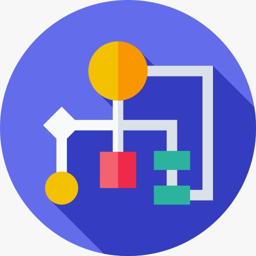

<div class="container mt-4">
    <div class="card shadow-lg border-0 rounded">
      <div class="row g-0">
        <!-- Imagen -->
        <div class="col-md-4">
          
        </div>
        <!-- Contenido -->
        <div class="col-md-8">
          <div class="card-body">
            <h2 class="card-title text-center text-primary">¿Qué es UML?</h2>
            <p class="card-text mt-3">
              El <span class="fw-bold text-success">Lenguaje Unificado de Modelado (UML, por sus siglas en inglés)</span> 
              es un estándar ampliamente utilizado para modelar sistemas de software. UML fue desarrollado para 
              proporcionar un lenguaje visual que facilite el diseño y la comprensión de sistemas complejos, 
              mediante el uso de diagramas claros y bien estructurados.
            </p>
            <h5 class="mt-4 text-secondary">Características principales de UML:</h5>
            <ul class="list-group list-group-flush">
              <li class="list-group-item">
                <strong class="text-info">1. Visualización:</strong> permite representar sistemas de forma gráfica.
              </li>
              <li class="list-group-item">
                <strong class="text-info">2. Estandarización:</strong> utiliza notaciones universales entendidas en la 
                industria del software.
              </li>
              <li class="list-group-item">
                <strong class="text-info">3. Flexibilidad:</strong> se puede usar para modelar aplicaciones de diferentes 
                dominios y tamaños.
              </li>
              <li class="list-group-item">
                <strong class="text-info">4. Comprensión:</strong> facilita la comunicación entre equipos técnicos y 
                no técnicos.
              </li>
            </ul>
            <h5 class="mt-4 text-secondary">Tipos de diagramas en UML:</h5>
            <ul class="list-group list-group-flush">
              <li class="list-group-item">
                <strong class="text-info">1. Diagrama de clases:</strong> modela las estructuras estáticas del sistema.
              </li>
              <li class="list-group-item">
                <strong class="text-info">2. Diagrama de casos de uso:</strong> muestra las interacciones entre usuarios y el sistema.
              </li>
              <li class="list-group-item">
                <strong class="text-info">3. Diagrama de secuencia:</strong> representa el flujo de mensajes entre objetos.
              </li>
              <li class="list-group-item">
                <strong class="text-info">4. Diagrama de actividades:</strong> detalla los flujos de trabajo o procesos del sistema.
              </li>
            </ul>
            <p class="card-text mt-3">
              UML es fundamental en el desarrollo de software, ya que mejora la planificación y documentación del proyecto. 
              Es utilizado tanto en la <span class="fw-bold text-danger">ingeniería de software</span> como en otras disciplinas 
              para modelar sistemas complejos de manera eficiente y colaborativa.
            </p>
          </div>
        </div>
      </div>
    </div>
  </div>
  